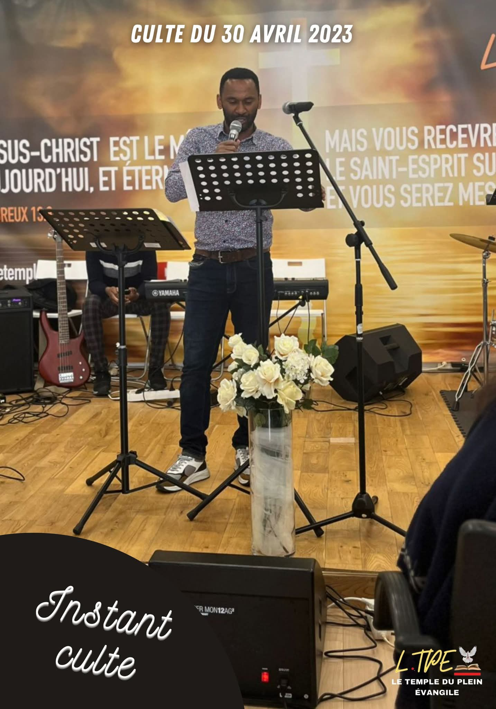
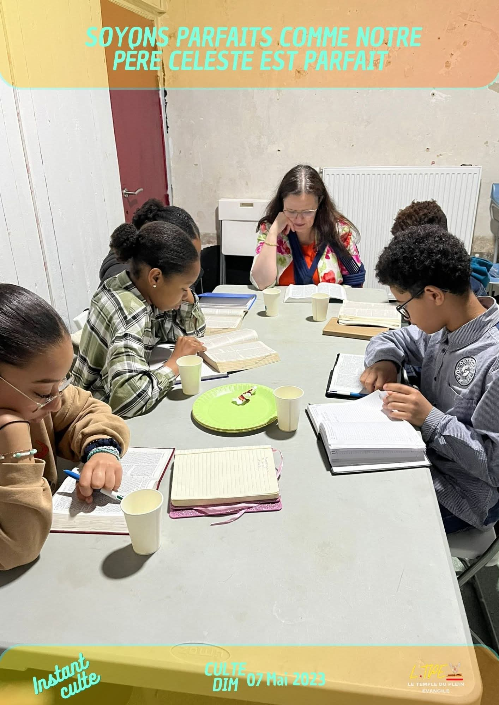
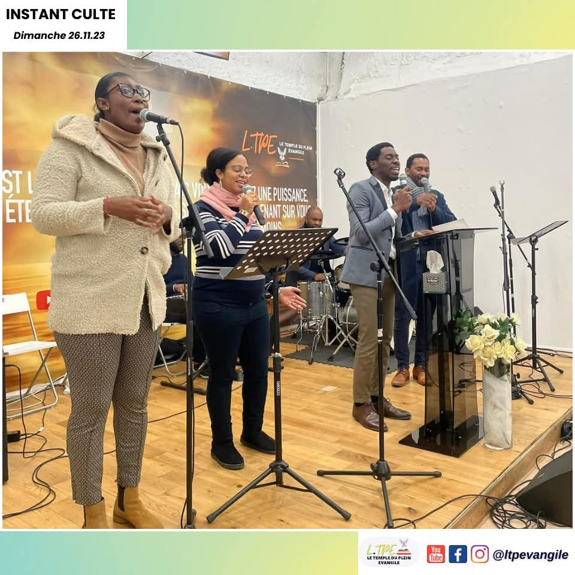
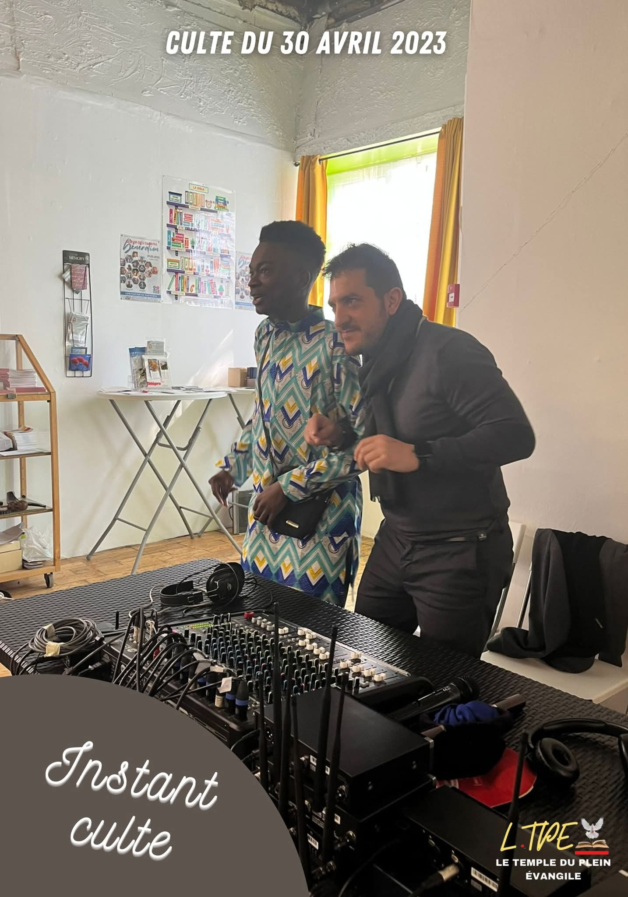

Qui Sommes-Nous ?
Découvrez notre histoire, notre vision et notre équipe
Notre Histoire
Le Temple du Plein Évangile (LTPE) a été fondé en 2012 à Bruxelles, Belgique. Notre église a commencé comme une petite communauté de croyants passionnés par la proclamation de l'Évangile complet de Jésus-Christ.
Depuis ses débuts, LTPE a grandi en nombre et en impact spirituel. Nous avons vu des vies transformées, des familles restaurées et des communautés touchées par la puissance du Saint-Esprit. Notre engagement envers l'excellence dans le ministère et l'intégrité dans nos actions nous a guidés tout au long de notre parcours.
Aujourd'hui, nous continuons à servir notre communauté avec passion, proclamant la Parole de Dieu avec amour et force, et invitant tous à expérimenter la grâce transformatrice de Jésus-Christ.
-
2012
Bruxelles-Midi
Les débuts de notre assemblée à Bruxelles-Midi.
-
2013–2020
Ixelles
Une nouvelle étape de la vie de l’église à Ixelles.
-
Depuis 2022
Ruisbroek
Notre communauté se réunit aujourd’hui à Ruisbroek.
-
Aujourd’hui
Grandir et servir ensemble
Une même foi, une communauté qui poursuit sa mission.
Repères chronologiques provisoires : les dates des déménagements sont en cours de vérification.
Notre Vision & Mission
VISION
Gagner et encadrer les âmes en Christ
MISSION
Proclamer la Parole avec amour et force
Nos Valeurs Fondamentales
La Parole de Dieu
La Bible est notre fondement et notre autorité. Nous croyons que la Parole de Dieu est vivante et puissante.
L'Amour
L'amour pour Dieu et pour le prochain est au cœur de notre foi. Nous servons avec compassion et intégrité.
La Communion Fraternelle
La Communion fraternelle se manifeste dans nos relations. Nous nous encourageons mutuellement dans notre foi.
Partager la vie de l’égliseLa Puissance du Saint-Esprit
L'empowerment par le Saint-Esprit est au cœur de notre expérience spirituelle et de nos ministères.
Découvrir la prièreNotre Équipe Pastorale

Pasteur Martin MFUAMBA MUAMBA
Pasteur Principal
Leadership visionnaire et engagement pastoral auprès de la communauté.
Frère Paul BAMPALE
Frère de l'église
Engagement pastoral auprès de la communauté et ministère de la Parole.

Frère Abel TEBILY
Pasteur Stagiaire
Engagement pastoral auprès de la communauté et ministère de la Parole.
Grandir et servir ensemble

École du dimanche
Découvrir la Bible et grandir dans la foi dès l’enfance.
Découvrir ce ministère
Groupe de louange
Célébrer Dieu ensemble par le chant et la musique.
Découvrir ce ministère
Groupe de prière
Partager nos sujets de prière et intercéder ensemble.
Découvrir ce ministère
Groupe logistique
Servir la communauté et accompagner les rencontres de l’église.
Découvrir ce ministèreGroupe de Jeunesse
Un espace pour grandir dans la foi, partager et s’engager ensemble.
Découvrir ce ministèreRejoignez Notre Famille
Venez découvrir une communauté où vous serez accueilli avec amour et intégrité